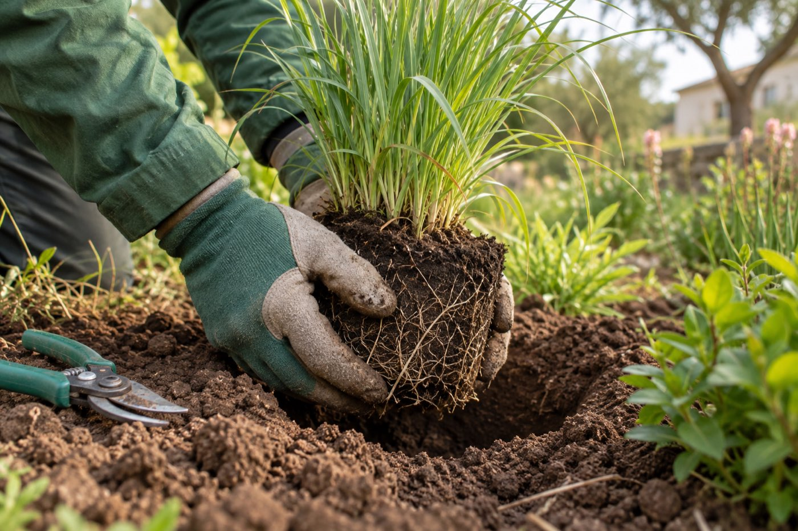

Prestations
Ce que nous faisons, et ce qui est compris.
Chaque devis détaille les postes un par un. Vous pouvez en retirer, en ajouter, ou étaler le chantier en deux saisons.

Création de jardin
Un jardin dessiné pour votre sol et votre exposition.
Nous commençons par regarder ce qui pousse déjà chez vous et chez vos voisins. Le plan vient après, pas avant.
Compris : visite et relevé du terrain, plan à l'échelle avec la liste des végétaux, préparation du sol, plantation, paillage, arrosage enterré si le projet le demande, passage de contrôle au printemps suivant.
En option : éclairage de jardin, clôture et portillon, récupération d'eau de pluie.
Terrasses et allées
Bois, pierre, grès cérame ou gravier : posés pour durer.
Une terrasse qui bouge après deux hivers, c'est une fondation mal faite. Nous passons plus de temps sous la terrasse que dessus.
Compris : terrassement, fondation ou plots adaptés au sol, pentes et évacuation des eaux, pose, finitions de bordure, nettoyage du chantier.
Matériaux : bois exotique ou pin traité, pierre calcaire ou granit, dalles grès cérame 2 cm, gravier stabilisé sur nid d'abeille.


Maçonnerie paysagère
Murets, escaliers et soutènements en pierre du pays.
Un terrain en pente n'est pas un défaut. Un muret bien placé crée deux niveaux, un escalier, et un endroit où s'asseoir.
Compris : fouilles et drainage, murets en pierre sèche ou maçonnée, escaliers, bordures, joints plantés si vous le souhaitez.
Pierre : granit de Vendée, calcaire de Charente, ou réemploi des pierres déjà présentes sur votre terrain.
Abords de piscine
Le bassin est posé, nous faisons tout ce qui est autour.
Une plage qui ne brûle pas les pieds, des plantes qui ne salissent pas l'eau, et un vis-à-vis qui disparaît en deux étés.
Compris : plage en pierre ou en bois, plantations résistantes à la chaleur et aux projections d'eau, haies et écrans, éclairage basse tension.
Nous ne faisons pas : le bassin lui-même. Nous travaillons avec votre pisciniste et nous intervenons après lui.

Vous ne savez pas par où commencer ?
C'est le cas de presque tout le monde. Envoyez-nous deux photos de votre terrain et ce que vous aimeriez en faire, nous vous dirons ce qui est possible.